① 점 $A$의 좌표를 기호로 나타내면 $-5$이다.
② 점 $B$의 좌표는 $-\frac{7}{3}$이다.
③ 점 $C$의 좌표를 기호로 나타내면 $C(1, 0)$이다.
④ 점 $A, B, C, D$에서 좌표가 양수인 점은 2개다.
⑤ 수직선 위의 점에 대응하는 수를 그 점의 순서쌍이라 한다.
답: ( )번
4. 라원이가 등산을 할 때, 경과 시간 $x$에 따른 지면으로부터의 높이 $y$라 하자. $x$와 $y$ 사이의 관계를 그래프로 나타내면 다음과 같을 때, 다음 중 A 구간에 대한 설명으로 가장 적절한 것은?
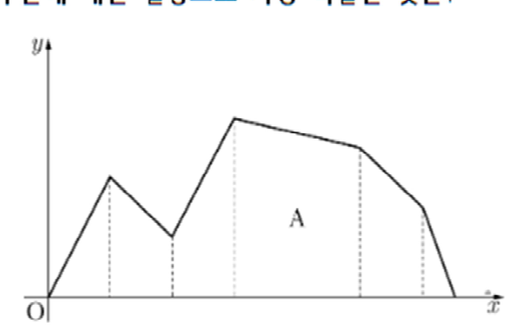
① 잠시 쉬고 있다.
② 정상에 오르는 중이다.
③ 평지를 걷고 있다.
④ 가장 빠르게 오르는 중이다.
⑤ 내리막길을 걷고 있다.
답: ( )번
2. 다음 좌표평면 위의 점 $A, B, C, D, E$의 좌표를 기호로 나타낸 것으로 옳은 것은?
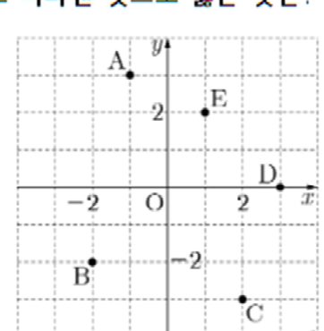
① $A(1, 3)$② $B(-2, 2)$
③ $C(2, -2)$④ $D(2, 0)$
⑤ $E(1, 2)$
답: ( )번
3. 다음 중 좌표평면의 설명으로 옳지 않은 것은?
① 점 $(4, 1)$은 제1사분면 위에 있다.
② $y$축 위의 점은 $x$좌표가 $0$이다.
③ 점 $(-3, 0)$은 제2사분면과 제3사분면에 속한다.
④ 점 $(191, 0)$은 $x$축 위에 있다.
⑤ 원점은 어느 사분면에도 속하지 않는다.
답: ( )번
5. $x < 0, y > 0$일 때, 다음 중 제4사분면 위의 점은?
① $(x, y)$② $(xy, y)$
③ $(-x, -y)$④ $(x-y, y)$
⑤ $(x, -y)$
답: ( )번
제 1 교시 : 수학 [6번 ~ 10번]배점: 각 4점
6. 두 변수 $x$와 $y$ 사이의 관계를 그래프로 나타냈더니 다음과 같았다. 다음 중 변수 $x, y$로 가장 적합한 것은?
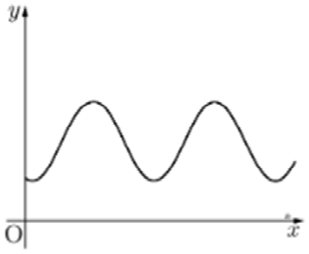
① 자몽 $x\text{g}$의 비타민 C 함량 $y\text{mg}$
② 휴대폰을 충전할 때, 충전 시간 $x$에 따른 배터리 잔량 $y$
③ 지면에서 하늘을 향해 야구공을 던질 때, 경과 시간 $x$에 따른 지면으로부터의 야구공의 높이 $y$
④ 용량이 $100\text{mL}$인 포도당 주사액이 일정하게 흘러나올 때, $x$분 후에 남은 주사액의 양 $y\text{mL}$
⑤ 그네가 일정하게 움직이고 있을 때, $x$초 후 그네의 높이 $y$
답: ( )번
8. 다음 중 $y = -\frac{1}{3}x$의 그래프를 나타낸 것으로 옳은 것은?
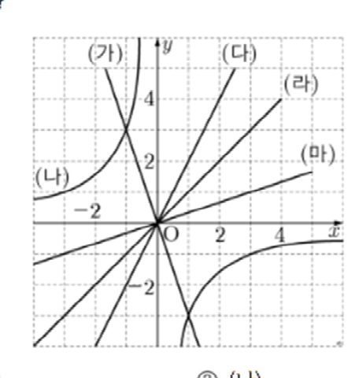
① (가)② (나)③ (다)④ (라)⑤ (마)
답: ( )번
7. 다음 그림은 두 변수 $x$와 $y$ 사이의 관계를 나타낸 그래프이다. $x = 2$일 때, $y$의 값은?
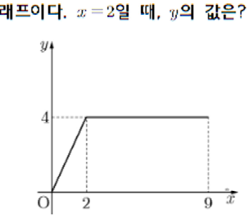
① 2② 4③ 6④ 8⑤ 9
답: ( )번
9. 정비례 관계 $y = ax$ ($a
eq 0$)의 그래프가 점 $(-2, -12)$를 지날 때, 다음 중 이 그래프 위에 있지 않은 점은?
① $(-3, -21)$② $(2, 12)$
③ $(6, 36)$④ $(1, 6)$
⑤ $(-5, -30)$
답: ( )번
10. 정비례 관계 $y = ax$ ($a
eq 0$)의 그래프가 다음 그림과 같을 때, $ab$의 값은?
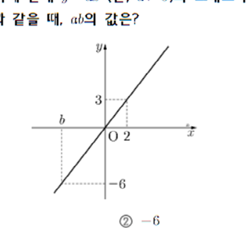
① -4② -6③ -8④ 4⑤ 6
답: ( )번
제 1 교시 : 수학 [11번 ~ 15번]배점: 각 4점
11. 반비례 관계 $y = \frac{a}{x}$ ($a
eq 0$)의 그래프가 두 점 $(6, \frac{1}{2})$, $(b, -9)$를 지날 때, $a + 3b$의 값은?
① 2② 3③ 4
④ 5⑤ $\frac{11}{2}$
답: ( )번
14. 다음 그림과 같이 정비례 관계 $y = ax$ ($a
eq 0$)의 그래프와 반비례 관계 $y = \frac{12}{x}$의 그래프가 점 $P$에서 만날 때, 수 $a$의 값은?
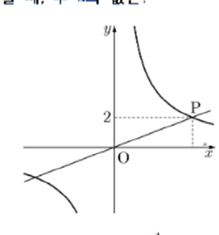
① 1② $\frac{1}{2}$③ $\frac{1}{3}$④ $\frac{1}{4}$⑤ $\frac{1}{5}$
답: ( )번
12. 다음 정비례 관계의 그래프 중 $x$축에 가장 가까운 것은?
① $y = x$② $y = -5x$
③ $y = -\frac{1}{3}x$④ $y = \frac{1}{2}x$
⑤ $y = -\frac{3}{4}x$
답: ( )번
13. 정비례 관계 $y = 4x$에 대한 설명으로 <보기>에서 옳은 것을 고른 것은?
ㄱ. 원점을 지나는 직선이다.
ㄴ. 점 $(-2, -8)$을 지난다.
ㄷ. 제2사분면과 제3사분면을 지난다.
① ㄱ② ㄱ, ㄴ③ ㄱ, ㄷ
④ ㄴ, ㄷ⑤ ㄱ, ㄴ, ㄷ
답: ( )번
15. 다음 그림과 같이 반비례 관계 $y = \frac{a}{x}$ ($a
eq 0$)의 그래프 위의 두 점 $B, F$에서 $x$축, $y$축에 수선을 그어 만나는 점을 차례대로 $C, A, D, E$라 할 때, 직사각형 $OABC$와 직사각형 $ODFE$의 넓이의 합은? (단, $P$는 반비례 관계 $y = \frac{a}{x}$의 그래프 위의 점)
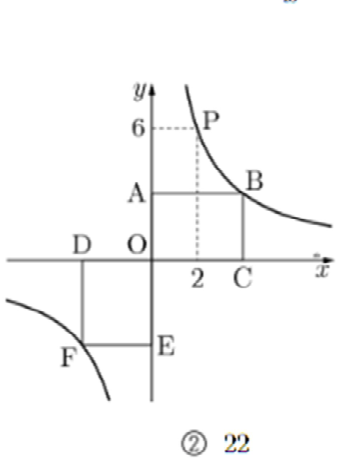
① 20② 22③ 24④ 26⑤ 28
답: ( )번
제 1 교시 : 수학 [16번 ~ 21번]배점: 각 4점
16. 다음 그림과 같은 삼각기둥에서 교점의 개수는?
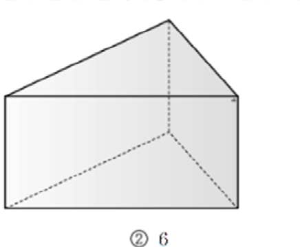
① 4② 6③ 8④ 10⑤ 12
답: ( )번
19. 다음 그림에 대한 설명으로 옳지 않은 것은?
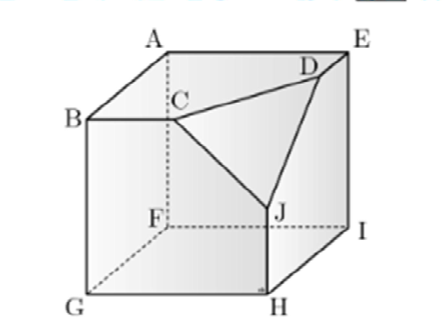
① 모서리 $BC$와 평행한 면은 2개이다.
② 모서리 $HJ$는 면 $HJDE$에 포함된다.
③ 모서리 $BC$와 모서리 $DJ$는 꼬인 위치에 있다.
④ 면 $CDJ$와 면 $ABGF$는 평행하다.
⑤ 모서리 $BG$와 수직인 면은 2개이다.
답: ( )번
17. 다음 중 옳은 것은?
① 한 점을 지나는 직선은 3개이다.
② 시작점이 같은 두 반직선은 같다.
③ 반직선의 길이는 직선의 길이의 $\frac{1}{2}$이다.
④ 직선 $AB$와 직선 $BA$는 서로 다른 직선이다.
⑤ 서로 다른 두 점을 지나는 직선은 1개이다.
답: ( )번
18. 다음 그림에서 $x$의 값은?
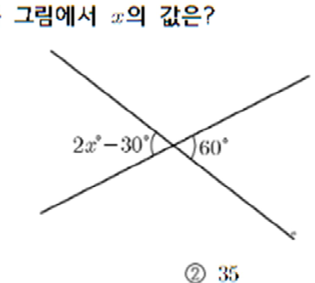
① 30② 35③ 40④ 45⑤ 50
답: ( )번
20. 다음 그림과 같은 전개도를 접어서 만든 삼각뿔에서 모서리 $AF$와 꼬인 위치에 있는 모서리는?
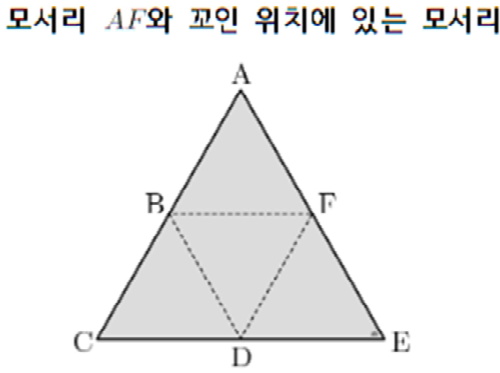
① $BD$② $AB$③ $AD$
④ $BF$⑤ $DF$
답: ( )번
21. 다음 그림에서 직선 $PM$이 선분 $AB$의 수직이등분선일 때, 선분 $AB$의 길이는?
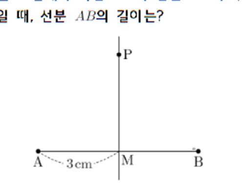
① 3cm② 4cm③ 5cm④ 6cm⑤ 7cm
답: ( )번
제 1 교시 : 수학 [22번 ~ 25번]배점: 각 4점
22. 다음 그림을 보고 <보기> 중 옳은 것을 고른 것은?
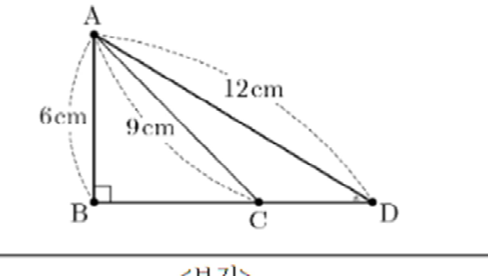
ㄱ. 점 $A$에서 $\overleftrightarrow{BD}$에 내린 수선의 발은 점 $D$이다.
ㄴ. 점 $A$와 $\overleftrightarrow{BC}$ 사이의 거리는 6cm이다.
ㄷ. $\overline{BD}$의 중점은 점 $C$이다.
① ㄱ② ㄴ③ ㄱ, ㄴ
④ ㄷ⑤ ㄴ, ㄷ
답: ( )번
25. 다음 그림에서 $l // m$일 때, $\angle x$의 크기는?
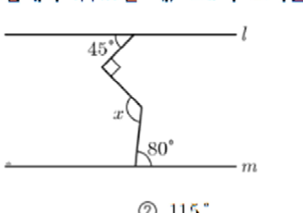
① 110°② 115°③ 120°
④ 125°⑤ 130°
답: ( )번
23. 다음 그림에서 점 $M$은 선분 $AB$의 중점이고, 점 $N$은 선분 $BC$의 중점이다. 선분 $NC$의 길이는?
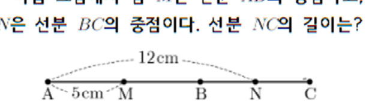
① 1cm② 2cm③ 3cm④ 4cm⑤ 5cm
답: ( )번
24. 다음 그림과 같이 직사각형 모양의 종이를 접었을 때, $2\angle x - \angle y$의 크기는?
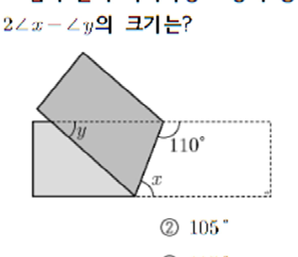
① 100°② 105°③ 110°
④ 115°⑤ 120°
답: ( )번
🎯 [정답 및 친절한 해설집] 현일중 중간고사 기출 25제
채점 및 오답 분석용 상세 해설표입니다.
01~05
01: ④ (좌표가 양수인 점은 C(1), D(3)으로 2개) 02: ⑤ ($E(1, 2)$가 옳음) 03: ③ (축 위의 점은 어느 사분면에도 속하지 않음) 04: ⑤ (시간이 지남에 따라 높이가 낮아지는 내리막길 구간) 05: ③ ($x<0, y>0$이면 $-x>0, -y<0$이므로 제4사분면)
06~10
06: ⑤ (주기적으로 높낮이가 왕복하는 그네의 움직임) 07: ② ($x=2$일 때 그래프의 $y$값은 4) 08: ⑤ ($y=-\frac{1}{3}x$는 제2, 4사분면을 지나며 완만한 직선 (마)) 09: ① ($y=6x$ 위에 점 $(-3, -21)$은 $6\times(-3)=-18 \neq -21$이므로 없음) 10: ② ($y=ax$에서 $(2, -6)$ 대입 시 $a=-3$, $(b, 3)$ 대입 시 $b=-1$이 아니라 $ab=-6$)
11~15
11: ① ($a=6\times\frac{1}{2}=3$, $-9=\frac{3}{b}\rightarrow b=-\frac{1}{3}$. $a+3b = 3-1 = 2$) 12: ③ ($|a|$의 값이 가장 작은 직선이 $x$축에 가장 가까움: $|-\frac{1}{3}| \approx 0.33$) 13: ② (원점을 지나는 직선(ㄱ)과 $(-2, -8)$을 지남(ㄴ)은 참, 제1,3사분면을 지나므로 ㄷ은 거짓) 14: ③ ($y=2$일 때 $2=\frac{12}{x}\rightarrow x=6$, 점 $P(6, 2)$를 $y=ax$에 대입하면 $a=\frac{1}{3}$) 15: ③ ($P(2, 6)$에서 $a=12$. 반비례 직사각형 넓이는 점의 위치와 무관하게 각각 12. 합은 $12+12=24$)
16~21
16: ② (삼각기둥의 교점 개수 = 꼭짓점 개수 = 6개) 17: ⑤ (서로 다른 두 점을 지나는 직선은 오직 1개) 18: ④ (맞꼭지각의 크기는 같으므로 $2x-30=60 \rightarrow 2x=90 \rightarrow x=45$) 19: ④ (면 CDJ와 면 ABGF는 평행하지 않고 수직 또는 교차) 20: ① (전개도를 접었을 때 모서리 $AF$와 만나지도 평행하지도 않은 모서리는 $BD$) 21: ④ (선분 $AB$의 수직이등분선이므로 $AM=MB=3\text{cm}$, 따라서 $AB=6\text{cm}$)
22~25
22: ② (점 $A$에서 내린 수선의 발은 점 $B$이고, 거리는 수선의 길이인 $AB=6\text{cm}$) 23: ② ($AM=4\text{cm}\rightarrow AB=8\text{cm}$. $BC=12-8=4\text{cm}$, $NC=\frac{4}{2}=2\text{cm}$) 24: ① (접은 각 $110^\circ$와 엇각을 이용하여 $\angle x=70^\circ, \angle y=40^\circ \rightarrow 2(70)-40=100^\circ$) 25: ④ (꺾인 점에 평행 보조선을 그으면 위쪽 엇각 $45^\circ$ + 아래쪽 엇각 $80^\circ = 125^\circ$)